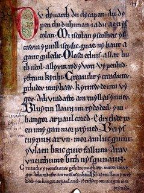
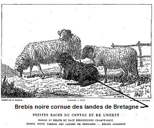
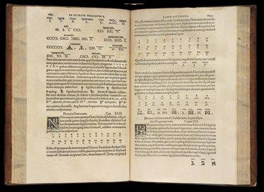
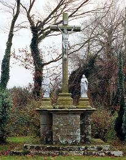
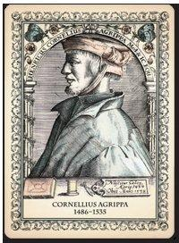
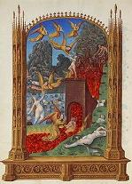
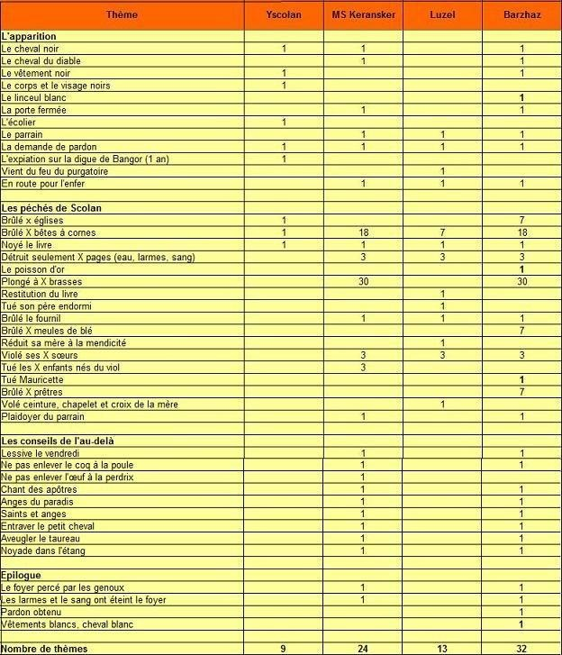
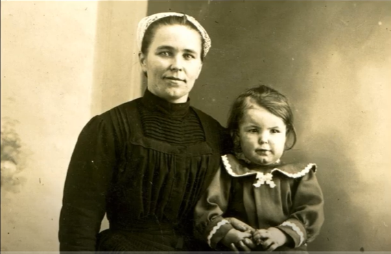

Yannick Scolan
I. Le Crime - II. La Merci de l'âme
I. The Crime - II. The Pardon to the Soul
I. Dialecte du Bas-Vannes - II. Dialecte de Cornouaille
|
La Villemarqué a réuni deux chants différents sous le même titre:
LE CRIME - sous forme manuscrite: . Dans la collection de Penguern, t. 91 ff. 16 -170: "Morisetta Tafetaou". - dans 3 recueils: . Chez Luzel, "Sonioù", 1er tome, "An dañvad Penngornik", collecté à Duault: c'est la complainte du mouton chantée par Mauricette; "Gwerzioù" Tome II, p. 289, 1874, "Morisetta Tefetaoù" . Chez Narcisse Quellien, "Chansons et danses des Bretons": "Kaon" (fragment). . Chez le Chanoine Le Méné, "Histoire des Paroisses du Diocèse de Vannes", t. I, p.520. - dans des revues: . Chez l'Abbé François Cadic, dans "La paroisse bretonne de Paris", août 1907, "Mauricette"; dans la même revue, en juin-juillet 1927, un long article sur ce fait divers et le culte auquel il donna lieu. . En outre, dans la "Revue Morbihannaise (1894, pp. 91 à 104), l'abbé Cadic, recteur de Bieuzy, a publié sous le titre de "La complainte de Mauricette", une reconstitution de la gwerz originale vannetaise qui comprend 34 couplets. LA MERCI DE L'ÂME Les indications ci-après ont sans doute trait à la deuxième partie désignée ainsi en breton, "Eil Darn", dans l'édition 1839, puis intitulée "Truez an Ene" (La merci de l'âme) dans les suivantes. C'est en effet la seule où on remarque des ajouts ou des changements importants. "C'est la version [de mon informateur "polyglotte"] que j'ai suivie dans les premières éditions de ce recueil. J'en donne une autre aujourd'hui que je dois en partie à M.de Penguern et en partie à un fermier de M. du Laz de Pratulo . En 1867, cette référence se complique encore par l'ajout "et en partie à une mendiante de Loqueffret ". Il doit s'agir de cette Marie Koateffer à qui La Villemarqué était déjà redevable du "Marquis de Guérand" et du chant III de "Lez-Breiz" , le "Chevalier du roi". Pour faire bonne mesure, la Barde précise qu'il a "également profité d'une variante curieuse publiée en 1864 par M. Gabriel Milin dans le "Bulletin de la Société académique de Brest"! En 1846, la strophe 28 est remaniée et la strophe 30 est ajoutée. En 1867, les strophes 29, 34, 35, 51 et 52 sont ajoutées. Dans le second carnet, pages 117-19, figure également un texte intitulé "Skolan" (selon la thèse d'Eva Guillorel, puis publié en ligne en novembre 2018 ). - Sous forme manuscrite . par de Penguern, t. 89, ff.149-152: "Iannic Skouldrin" (à Henvic, en 1851); t. 93, ff. 38-39: "Yannic Scolant ag e baeron"; t. 93, ff. 82-84: "Yannik Scolant" (cf. ci-dessus). . par Mme de Saint-Prix. Quatre feuillets manuscrits, texte et traduction (communiqués par M. de La Jaille): "Iannic Scolant". . par Luzel, Ms. 960 de la bibliothèque de Rennes, "Iannik Skolan" (Plouguiel, 1869), publié dans "Ethnologie française, I (1971 3-4). - Publié dans un recueil . par Luzel, "Gwerzioù" tome 1, "Iannik Skolan", pp. 150-152 (Pluzunet, 1867). - Publié dans des périodiques . par Gabriel Milin dans "Gwerin", 1: "Iann Eskolmwenn" (Brest, 1856) (et dans le "Bulletin de la Société académique de Brest", tome III, pp. 390-393, (1862-1863). Utilisé par La Villemarqué. . par Ernault dans "Mélusine" VIII (1896): "Yannik Skolan" (Trévérec) (fragment). . par l'Abbé Pérennès dans "Annales de Bretagne" XLV (1938): Gwerz Golvennik (Quimper, 1937). . par Donatien Laurent, dans "Ethnologie française": "Gwerz Skoulvanig (Langonnet, 1963); "Gwerz Skolvant" (Canihuel, 1959); "Gwerz Skolvan" (Carhaix, 1967); "Buhez Skolvan" (Plounévézel, 1969); "Gwerz Ian Skolan" (Plougonver, fragment recueilli par Ernault en 1889). |
Le premier chant d'Yscolan du Livre Noir de Carmarthen
The first song of Yscolan in the Black Book of Carmarthen  Du dy varch, du dy capan, Du dy pen, du du hunan. Ia du! Ae ti Ys colan? - Mi Iscolan, yscolheic Us cawin y puill iscodic Guae ny bauth a gauth Guledic! -O losci ecluis a llath bu ch iscol A llyvir rod y voti. Vy penhid ys trum kYnhi. Creaudir y creaduriv pthidev muyaw. Kyrraw de i mi vy gev! Ath vraddafte am thuyllaf ynheu. Bluytin llaun ym rydoded Ym bangor ar paul cored. Edrich de po en imy gan mor pryved. Bei ys cuypun ar un mor amluc guint Y vlaen bric guit fallum. Arav uvneuthum e bith nys gunaun! Note en marge: "Merddin/ a Thalie/ sin ar/ pawl ym/ angor" Traduction ci-après - Translation below Autres mélodies collectées par D. Laurent: Mélodie -Tune 1 Chantée par M.Huilliou à Langonnet en 1963 Mélodie -Tune 2 Chantée par M.Marteil à Canihuel en 1959 Mélodie -Tune 3 Chantée par Y. Le Lay à Duault en 1968 |
La Villemarqué put together two different songs under the same title.
THE CRIME - As a manuscript: In the De Penguern collection, B. 91, ff.16 -170: "Morisetta Tafetaou". - in 3 collections: . in Luzel's "Sonioù", 1st book, "An dañvad Penngornik", recorded at Duault: it is the lament on the sheep sung by Mauricette; "Gwerzioù" Book II, p. 289, 1874, "Morisetta Tefetaoù" . in Narcisse Quellien's "Chansons et danses des Bretons": "Kaon" (a fragment). . in Canon Le Méné's "History of the Vannes diocese parishes", 1st book, p.520. - in periodicals : . in Abbé François Cadic's "Paroisse bretonne de Paris", August 1907, "Mauricette"; in the same periodical, in June-July 1927, a long article on this dramatic event and the cult that arose from it. . in "Revue Morbihannaise (1894, pp. 91 to 104), the Reverend Cadic, vicar at Bieuzy, published under the title "The Lament of Mauricette" a reconstruction of the original gwerz, in Vannes dialect, made up of 34 stanzas. THE PARDON TO THE SOUL The information below applies, very likely, to the second part which is titled "Eil Darn" (=second part) in the 1839 edition, then "Truez an Ene" (Pardon to the Soul) in the ensuing editions, since only in this part are there significant changes in the text or additions to it. "I had published the version [of my bilingual informant] in the previous edition. Today I give another version for which I am endebted partly to M.de Penguern and partly to a tenant-farmer of M. du Laz de Pratulo's . In 1867, this reference becomes still more complex, as he adds "and partly to a beggar woman from Loqueffret ". The latter must be Marie Koateffer from whose singing La Villemarqué had learnt the "Marquis de Guérand" and the song III in "Lez-Breiz" , i.e. the "King's Knight". And to make it more intricate the Barde states that he "also availed himself of a curious variant published in 1864 by M. Gabriel Milin in the "Bulletin de la Société académique de Brest"! In 1846, stanza 28 is rewritten, and stanza 30 added. In 1867, stanzas 29, 34, 35, 51 et 52 are added. In the second copybook, on pages 117-19, is also a text titled "Skolan" (as stated in the doctoral thesis of Eva Guillorel then published on line in November 2018 ). - In handwritten form . by de Penguern, B. 89, ff.149- 152: "Iannic Skouldrin" (at Henvic, in 1851); B. 93, ff. 38-39: "Yannic Scolant ag e baeron"; B. 93, ff. 82-84: "Yannik Scolant" (see above). . by Madame de Saint-Prix. Four handwritten leaves with text and translation (sent in by M. de La Jaille): "Iannic Scolant". . by Luzel, Ms. 960 kept in the Rennes library, "Iannik Skolan" (Plouguiel, 1869), published in "Ethnologie française", I (1971 3-4). - Published in a collection . by Luzel, "Gwerzioù" part 1, pp. 150-152: "Iannik Skolan" (Pluzunet, 1867). - Published in periodicals . by Gabriel Milin in "Gwerin", 1: "Iann Eskolmwenn" (Brest, 1856) (and in the "Bulletin de la Société académique de Brest", 1862, 3rd quarter). Used as material by La Villemarqué. . by Ernault in "Mélusine" VIII (1896): "Yannik Skolan" (Trévérec) (a fragment). . by Abbé Henri Pérennès in "Annales de Bretagne" XLV (1938): Gwerz Golvennik (Quimper, 1937). . by Donatien Laurent, in "Ethnologie française": "Gwerz Skoulvanig (Langonnet, 1963); "Gwerz Skolvant" (Canihuel, 1959); "Gwerz Skolvan" (Carhaix, 1967); "Buhez Skolvan" (Plounévézel, 1969); "Gwerz Ian Skolan" (Plougonver, a fragment collected by Ernault in 1889). |
Mélodie -Tune
(Mode hypodorien)
| Français | English |
|---|---|
|
I
LE CRIME I 1. On était entre chien et loup Quand la mendiante vint chez nous. Quand elle entre en notre logis A tout le monde elle sourit. 2. - Dieu bénisse ce bâtiment! Vous, la mère et vous les enfants. Une fois de plus, me voici. Tous se portent-ils bien ici? 3. - Ma foi, commère, rien à dire, Sauf que l'état du maître empire. Si sa maladie dure encor, Il me faudra mendier dehors. 4. Approchez l'escabeau du fond, Commère, et asseyez-vous donc! Approchez donc cette escabelle: Contez les dernières nouvelles! 5. - Des choses, il s'en est passé. Et vous en avez ouï parler. Ne savez-vous pas, l'autre jour, Ce qui s'est passé près du bourg? - 6. Le cher maître de maison dit: - Cherchez du lait. Donnez-le-lui. Un peu de lait et une crêpe. Pour ses genoux, une serviette! 7. - Yannick Scolan est arrêté. Maintenant il pend au gibet. Court pendu sur la place à Vannes, Expiant ses crimes infâmes. 8. - Commère, j'ignorais ceci. Je ne peux m'éloigner d'ici. Nulle part je ne peux aller, Car j'ai mes enfants à soigner. 9. - Des forfaits, il en a commis En ce monde jusqu'aujourd'hui, Le dernier crime qu'il commette Fut d'assassiner Mauricette. II 10. Gardant les bêtes de son père Elle ne songeait qu'à bien faire. Le seul être qu'elle pleurât C'est l'agneau qu'un loup emporta. 11. N'ayant donc qu'une fois pleuré, Ce seront deux fois, désormais. Elle avait fait une chanson Qu'on chante par tout le canton: 12. "Hélas, mouton aux cornes blanches! Hélas, pauvre bête innocente! Hélas, mon cher petit mouton, Qui fut un animal si bon!" - 13. Yannick Scolan rentrait chez lui, Son bâton en main et la vit: - Mauricette, vous qui chantez, Me donnerez-vous un baiser? 14. - De baiser, vous n'en aurez point: On vous connaît comme un gredin. - Et elle s'enfuit en courant. Mais, hélas, c'était en plein champ. 15. Et le voilà qui la poursuit, Qui la frappe trois fois et qui La fait dans son sang s'écrouler Inanimée, les yeux fermés. III 16. Sept ou huit jours avaient passé Sans que son père soit rentré. Vers les onze heures ou midi Son père est revenu chez lui. 17. - Mes pauvres enfants, dites-moi. Vous êtes si tristes. Pourquoi? Votre sœur n'est point là. Pourquoi? - Mieux vaudrait qu'on n'en parle pas! 18. Oui, vous saurez bien assez tôt Que notre sœur, sur le coteau, Là-bas, gît par terre, nageant, Pauvre victime, dans son sang. 19. C'est le tisserand qui l'a tuée: Elle était par lui harcelée. Dès que vous vous êtes absenté, Yannick Scolan s'est déchaîné! 20. Il voulait la faire faillir Mais il ne put y parvenir. Elle résistait à l'infâme, Plutôt que de perdre son âme. IV 21. On porte en terre Mauricette Le sang coule de la charrette. On voit pleurer jeunes et vieux. Son père en larmes derrière eux. 22. Si l'on veut la voir à présent C'est sur le chemin de Melrand, Et une croix neuve publie Que c'est là que finit sa vie. ********************* II LA MERCI DE L'ÂME 23. Yannick Scolan et son parrain S'en vinrent avant le matin, Demander le "pardon des âmes" Pour toutes ses fautes infâmes. 24. Yannick Scolan un soir entra Chez sa mère qu'il salua: - Bonsoir à tous en ce logis. Tout le monde dort-il ici? 25. - Par où donc êtes-vous entré? Moi qui pensais avoir fermé A clef mes portes de partout, Et mes fenêtres au verrou. 26. - Il y a longtemps que je sais Ouvrir ce que l'on a fermé. Une bougie! Soufflez le feu! Et vous verrez: nous sommes deux. - 27. Quand la bougie fut allumée, L'épouvante s'est emparée D'elle voyant, passé minuit, Deux personnes dans son logis. 28. - Oh, ma mère, n'ayez pas peur Je suis votre fils. Le malheur Me conduit vers vous, car j'espère La bénédiction de ma mère! 29. - Lui mon fils? Dites-moi comment, Il a quitté son linceul blanc, Et revient, tout vêtu de noir, Bien contrit, semble-t-il, me voir. 30. Noir ton cheval, - toi tout autant-, Et son crin est rêche et piquant. Cette odeur de sabot brûlé! Je t'ai maudit, Scolan, c'est vrai. 31. - Mon cheval est celui du diable C'est en enfer qu'est son étable. C'est la que je m'en vais brûler Si ne voulez me pardonner. 32. - Comment donc t'offrir le pardon? Tu t'es conduit comme un démon, Toi qui mis à mon four le feu Et brûlas dix huit de mes bœufs! 33. - Mère, je sais que je l'ai fait Par malheur et méchanceté. Mais puisque Dieu me pardonne, Fais en donc autant et sois bonne! 34. - Comment donc t'offrir le pardon? Tu t'es conduit comme un démon. Toi qui brûlas sept tas de blé Et sept églises, sept curés. 35. - Mère, je sais que je l'ai fait. Par malheur, par méchanceté. Mais puisque Dieu me pardonne, Fais en donc autant et sois bonne! 36. - Comment donc t'offrir le pardon? Tu t'es conduit comme un démon. Toi qui violas tes trois sœurettes Et tuas ma nièce Mauricette. 37. - Mère, je sais que je l'ai fait. Par malheur, par méchanceté. Mais puisque Dieu me pardonne, Fais en donc autant, oui, sois bonne! 38. - Comment donc t'offrir le pardon? Tu t'es conduit comme un démon. Tu m'as perdu mon petit livre Qui de tout chagrin me délivre. 39. - Je ne le nierai pas non plus. Mais ce livre n'est pas perdu. Car à trente brasses au fond De la mer le garde un poisson. 40. Un poisson d'or. Trois de ses feuilles Furent arrachées au recueil. L'une par l'eau, l'autre le sang, L'autre mes pleurs qui vont coulant. - 41. Le parrain qui l'accompagnait, Prenant sa défense, disait: - Mais quel cœur de pierre as-tu donc Pour laisser ton fils sans pardon? 42. Comment, mère dénaturée, A ton fils ne point pardonner? Si ton enfant part en enfer, Tu devras l'y suivre, os et chair. 43. - Je ne te pardonnerai pas, A toi qui viens de l'au-delà, Sans que tu ne m'aies révélé De l'au-delà quelque secret. 44. - Ma mère, si vous m'en croyez, Vous ne ferez point la buée Le vendredi, car c'est le sang Du Seigneur qu'on cuit, ce faisant. 45. N'enlevez ni coq à la poule, Ni rouge-gorge qui roucoule: Le coq chante vers le ciel quand Les apôtres en font autant. 46. Lorsque le coq chante à minuit, Un ange chante au paradis. Et s'il chante à la prime aurore, Anges et saints chantent encore. 47. Mais avant tout, il faut qu'on veille, - Avec soin, je vous le conseille -, A museler le porc, sans quoi, Votre seigle il ravagera; 48. A bander les yeux du poulain Pour se prémunir du chagrin; A bien entraver le pur-sang Pour qu'il ne se noie dans l'étang. - 49. Le lendemain, à son lever, Elle vit le seuil du foyer Qui portait en son centre un trou Qu'avaient imprimé ses genoux. 50. Et des caillots de sang parmi Les charbons, répandus par lui En pleurant sur cendres et feu Qu'ils avaient étouffés sous eux. 51. - Cette odeur de thym, de laurier. Signifie qu'il est pardonné. Son cheval est blanc comme lui. Vois, sa crinière resplendit! 52. Mais dis-moi donc, Scolan, mon fils, Où ton parrain te mène-t-il? - Il me conduit au paradis Que ta bénédiction m'ouvrit. Traduction Chr. Souchon (c) 2007 NOTE; Les strophes en gras n'ont pas de correspondantes dans les manuscrits N°1 et N°2 Les strophes en italique ont un correspondant dans le manuscrit N°2 La strophe en bleu a été ajoutée en 1845. Les strophess en vert ont été ajoutées en 1867 |
I
THE CRIME I 1. About the close of the day The beggar woman went this way. Wherever she obtains entry She smiles to everybody. 2. - God's blessing be on everyone, On you, woman, on you children! Here I am again in your house. How are you all, man and mouse? 3. - Alas, I can't complain, Granny. But my poor man is unhealthy And should his disease last longer I would be forced to turn beggar. 4. But take a stool from this corner, Granny, sit down, come nearer! Do come and sit you down, Granny. Have you some news from the country? 5. - Of news I have more than a bit; But, to be sure, you heard of it... Or did you really not hear Of what has happened around here? 6. - Now, so said the good house master, Let bring a drop of milk for her. A drop of milk and a pancake, And upon her lap lay a plate. 7. - Yannick Scolan was arrested And to the gallows was condemned. Hung on the market place in Vannes To expiate all his horrid crimes. 8. - Granny, I never heard of that I never leave from here in fact. In fact I can't go anywhere. I have my kids to look after. 9. - Enough infamy he's done Since the accursed day he was born. Crimes enough he had committed Before he killed poor Morised. II 10. She was guarding her father's flock, Morally as strong as a rock And known to have cried only once: When a wolf on her lamb did pounce. 11. Had she cried once in her lifetime, Now she will have cried one more time. She had cried and had made a song That is sung throughout the canton. 12. - Alas, my little white-horned lamb! Alas, little white-headed ram! Alas, alas, dear little pet, I never, never will forget! - 13. Now Yannick Scolan came that way His staff in his hand and did say: - Morised, you sing merrily! Just a little kiss you give me! 14. A kiss I never shall give you! As naughty men, as you, are few. - And she takes screaming to her heels But nobody hears her appeals. 15. He chases her, in high dudgeon, And strikes her thrice with his bludgeon. Knocks her down in a pool of blood With her soft eyes forever closed. III 16. Seven, maybe eight days were gone Without her father coming home. When, about noon or eleven, Her father to his house returned. 17. - O my poor children, tell me, say, Why are you all filled with dismay? As to your sister, where is she? - You shall hear of her presently. 18. You shall hear presently enough Of Morised's fate, hard and tough! She lies yonder near the meadows And she has shed her blood in flows. 19. She was killed by the weaver. Since you have been absent from here, He's been trying to seduce her. Yannick Scolan was her murder. 20. He tried to induce her to sin And yet she refused to give in. The seal of her virtue is whole. She did not want to damn her soul. IV 21. When she was carried to churchyard Her blood was pouring from the cart Everyone cried, young and old And her father, moaning, followed. 22. If you want to remember her, To the Melrand road you repair. There, a new cross was erected Where from this world she departed. ****************************************** II THE PARDON TO THE SOUL 23. Yannick Scolan and his "patron" Came, both of them, to ask pardon To ask the "pardon to the soul", For all his sins, so base and foul. 24. Yannick Scolan, he did alight At his mother's house one night: - Good night and joy, all people here Who're asleep. There's no ground for fear! 25. - How you could come in puzzles me. My doors were shut with lock and key. My doors were shut with key and lock And my windows were under bolt. 26. - They may be carefully locked, though, It's been a long time since I know How to open. A taper light! Two visitors have come tonight. - 27. When the candle was lit she saw With great astonishment and awe Two men who were in her chamber. It was midnight, maybe later. 28. - Don't cry, Mother! Don't fear or scorn! I am the son that you have born. I came to see you once again, And my mother's blessing to gain. 29. - How could you be my son so proud?: I had wrapped him in a white shroud And here you are, all clad in black. What heartbreak brought you to me back? 30. Black is your horse, - and black are you -, Its hair stings as thistle prickles do. I smell an odour of burnt horn. My curse be on the son I've born! 31. - It's the devil's horse that I ride I'm nearer to hell with each stride. And my punishment you harden, If you refuse me your pardon. 32. - To pardon you! How could that be? Much wrong, indeed, you did to me! You 've put on fire my bakery, Burnt eighteen cows with savagery! 33. - Mother, I admit I did it. I was ill-judged and ill-fated. But since God has forgiven me I beg you to show clemency! 34. - To pardon you! How could that be? Much wrong, indeed, you did to me! You burnt seven sheaves wheat, you beast! Seven churches, each with its priest! 35. - Mother, I admit I did it, Alas, ill-judged and ill-fated. But since God has forgiven me, Mother, be good and pardon me! 36. - Pardon you! How could that be? Great is the wrong you did to me! Three of your sisters you raped, And you killed my niece, Morised! 37. - Mother, I admit I did it, For sure, ill-judged and ill-fated. But since God has forgiven me I beg you to show clemency! 38. - Pardon you! How could that be? Great is the wrong you did to me! You have mislaid my little book, My only solace, in some nook. 39. - Poor Mother, you must pardon me! Thirty fathoms deep in the sea, Your book is kept in safety, In a fish of gold's custody . 40. Every harm to it has been foiled Except three pages that were spoiled: One by water, and one by blood, And one by my salted tears' flood! - 41. Then the patron who was with him Advocated him. He was grim: - A more cruel mother is none Than you who don't pardon your son! 42. Cruel in the past and cruel afresh, Would you not pardon your own flesh? If your own son to hell must go, Flesh and bone, you, too, go below! 43. - If you want me to pardon you, Tell me first some things, one or two, That before your eyes were unfurled, Since you've been in the other world. - 44. Mother, Mother, take my advice, Never wash laundry on Fridays. You would be, with such behaviour, Cooking the blod of Our Saviour! 45. Never set apart cock and hen, Robin redbreast and his female: The cock's crows rise to the welkin. Robin chants when apostles sing. 46. When rooster's crows at midnight rise, The angels sing in paradise. When Robin sings, when soars the day Saints and angels sing in array. 47. Above all I commend to you - And mind that you observe it, too -: Muzzle the swine, or otherwise It will dig all your field of ryes. 48. To spare you toil with the young colt Don't forget its eyes to blindfold. And fetter well, lest he be drowned, Your stallion grazing near the pond. - 49. Early on next day, when she rose, She found, in the hearth sill, hollows. After a while she found that these Were dug by the caps of his knees. 50. She found clots of blood on the coals That came with his tears in their shoals, Shed on the cinders and the fire Which they had caused to expire. 51. - Of thyme and laurel I smell scents: It's my blessing that hell prevents. White is his horse, - he's himself white- Its mane is dazzling like sunlight! 52. My son Scolan, please tell me now, With your patron, where do you go? - To paradise I am going, Opened by my mother's blessing. Transl. Chr. Souchon (c) 2007 The stanzas in bold characters have no counterparts in both MS.#1 and #2 The stanzas in italic have a counterpart in MS #2 The stanza in blue was added in 1845. The stanzas in green were added in 1867 |
|
(Remark: since the MS text hardly differs from the printed stanzas, no addtitional English translation is needed, except for stanza (a) meaning: "All have gone to bed. Only I was staying here to put out the fire"). p. 170 Iannik Skolan (23) Yannik Scolan et son parrain Sont allés tous deux demander le pardon, Demander le pardon des âmes, Et rémission de leurs forfaits. (24) Yannik Scolan demandait En arrivant chez sa mère: - Bonheur et joie à tous en ce logis! Tout le monde est-il allé se coucher ici? (a) - Tous sont allés dormir, Moi seule je suis restée. Moi seule je suis restée Ici pour éteindre le feu. (25) Dites, par où êtes-vous entrés, Mes portes étaient fermées à clé? J'avais fermé à clé mes portes Et verrouillé mes fenêtres! (26.1)- Quand vous auriez fermé à clé vos portes Et verrouillé vos fenêtres, Et verrouillé vos fenêtres, (26.2) Je sais bien comment les ouvrir! (25.3) Et verrouillé vos fenêtres, (26.2) Je sais bien comment les ouvrir! (26.3) Allumez une bougie, attisez le feu: (26.4) Vous verrez deux hommes au lieu d'un. - |
p. 171 (27) Quand elle eut ravivé la flamme, Quel ne fut pas son étonnement, De voir deux hommes chez elle, A minuit en train de lui parler. (28) - Pas un mot, ma mère, n'ayez pas peur! C'est moi, le fils que vous avez mis au monde. C'est moi, le fils que vous avez mis au monde. Qui est revenu vous voir encore une fois. (31) Je suis venu ici sur le cheval du Diable, Avec lui c'est en enfer que je vais. Je m'en vais brûler en enfer, Si vous ne daignez pas me pardonner! (32) - Comment saurais-je te pardonner? Grande est l'offense que tu m'as faite: Tu as mis le feu à mon four Et brûlé 18 bêtes à cornes. p. 172 (33) - Ma mère, je sais bien que j'ai fait cela, Hélas, par haine et par rage Mais puisque Dieu m'a pardonné, Ma mère, pardonnez-moi aussi! (36) - Comment saurais-je te pardonner? Grande est l'offense que tu m'as faite: Tu as violé trois de tes soeurs Et assassiné leurs bébés. (...and killed their babies) |
(37) - Ma mère, je sais bien que j'ai fait cela, Hélas, par haine et par rage Mais puisque Dieu m'a pardonné, Ma mère, pardonnez-moi aussi! (38) - Comment saurais-je te pardonner? Grande est l'offense que tu m'as faite: Tu m'as fait perdre mon petit livre Mon seul plaisir en ce monde. (39) - Ma chère mère, pardonnez-moi: Votre petit livre n'est pas perdu. Votre petit livre n'est pas perdu. Il repose à trente brasses en mer. (40) Il n'a subi aucun dommage, Si ce n'est qu'il a perdu trois pages: Une par l'eau,l'autre par le sang, Une autre encore par les larmes de mes yeux. (40.3) Une par l'eau,l'autre par le sang, (40.4) Une autre encore par les larmes de mes yeux. (41.1) Mais son parrain qui était avec lui (41.2) A pris la parole pour le défendre: (42) - Comment, mère cruelle et dénaturée, Ne pardonnerais-tu pas à ton petit enfant? Si ton enfant va en enfer, Tu devras y aller, chair et os! (43) - Avant de pardonner déjà, Tu me diras quelque chose De ce que tu as vu, Depuis que tu as quitté ce monde. |
p. 173 (44.3) Quand on fait bouillir du linge le vendredi, (44.4) On fait cuire le sang de Notre Seigneur. (45.1) N'enlevez pa le coq de parmi les poules (45.4) Il chante lorsque chantent les apôtres. (46) Quand le coq chante à minuit, Les anges chantent au paradis. Quand le coq chante lorsque jaillit le jour Les saints et les anges chantent en choeur! Variante (45.2) N'enlevez pas son oeuf à la perdrix (45.1) Ni le coq à la poule (45.3) Le coq lorsqu'il chante vers le ciel. (45.4) Chante le chant des apôtres. (47) Avant toute chose, je vous demande - Et de cela, souvenez-vous bien!- Entravez bien le petit cheval (48.1) Et bandez bien les yeux du taurillon blanc! (48.1) Et bandez bien les yeux du taurillon blanc! ... cassé...chante (48.3) Bandez les yeux ... le ... jeune (48.4) Quand il sera au milieu de l'étang. - (49) Sa mère, quand elle se leva le matin Trouva l'âtre troué, Elle trouva la dalle trouée: Il l'avait trouée avec ses genoux. p. 174 (50) Et trois gouttes de sang, tout autour Qu'il avait versées avec ses larmes Avec ses larmes, parmi le feu Qui fut étouffé par elles. |
|
p. 117 1. La complainte de Scolan est venue chez nous Pour que les jeunes la chantent, Et que tous les vieux qui la sauront. 2. Que tous ceux sui la sauront et la répèteront Obtiennent trois-cents jours d'indulgence. Tandis qu'à ceux qui la savent et ne la répètent pas Il ne soit accordé aucun mérite . p. 118 3. Une vieille sur le pas de sa porte, Il vint trouver, plein d'affection: 4. - Qu'es-tu donc, toi qui viens ici Encore en route à cette heure de la nuit? (30) Ton cheval est noir, tu l'es aussi Couvert d'un crin qui me pique. 5. - Ma pauvre mère, n'ayez pas peur C'est moi, le fils que vous avez mis au monde. J'ai perdu la bénédiction de ma mère. 6. - Ma malédiction soit sur mon fils Scolan, Si c'est à lui que je parle, Ma malédiction soit sur lui. |
7. Malédiction par la lune, par les étoiles Malédiction par tout ce qui est au monde! 8. Votre père est cruel et fou: Qui pardonne les crimes de notre fils, Vois-tu, du fond du coeur! 9. Ce fils a brûlé neuf maisons, Il a violé trois de ses soeurs, Il a incendié dix-huit meules de blé. 10. Mais ce n'est point son plus grand péché: Il a fait disparaître mon petit livre, Comme il n'arrivait pas à le brûler Il l'a jeté dans la mer où il s'est abîmé. p. 119 / 63 11.(39) - Ma pauvre mère, pardonnez-moi! Votre petit livre n'est pas perdu Un petit poisson veille sur lui. 12. - Si mon petit livre est sauvé, Ma bénédiction soit sur mon fils Scolan, Ma bénédiction par la lune et les étoiles, Et par tout ce qui est au monde! 13. Si c'est de l'autre monde que vous venez, Dites-moi comment est ce monde-là... |
p. 117 1. Scolan's complaint came to our land So that young people may sing it, And all the old people may know it. 2. Let all those who know and repeat it Gain three hundred days of indulgence! As for those who know it and don't repeat it Upon them be bestowed none of it! p. 118 3. An old woman on her doorstep, He came to visit, full of love: 4. - What are you, you who come here Still on your way at this hour of the night? (30) Your horse is black, so are you: Covered with horsehair that stings me. 5. - My poor mother, don't be afraid: It's me, the son you gave birth to. I'm longing for my mother's blessing. 6. - My curse be on my son Scolan! If I'm talking to him, My curse be upon you! |
7. Be cursed by the moon, by the stars Cursed by all that is in this world! 8. Your father is cruel and crazy: Who forgives the crimes of our son, Do you know, from the bottom of his heart! 9. This son did burn nine houses, He raped three of his sisters, He burned eighteen millstones of wheat. 10. But this is not his greatest sin: He made my little book disappear. Since he couldn't burn it, He threw it into the sea where it sank. p. 119/63 11. (39) - My poor mother, forgive me! Your little book is not lost. A little fish watches over it. 12. - If my little book is saved, My blessing be on my son Scolan, My blessing by the moon and the stars, And by all that is in this lesser world! 13. Since you come from the other world, Tell me how this world is ... |
Vers les textes bretons
To the Breton texts

|
Confusion entre deux histoires
Comme l'ont remarqué Francis Gourvil et Donatien Laurent (ce dernier, dans "La Guerz de Skolan", Ethnologie française, 1971, 3-4, p.42, n)1), la première histoire est celle de Mauricette Jaffrezo (appelée dans une version trégoroise du chant, collectée par Luzel , "Mauricette Téfétaou" ), qui habitait au village de Locmaria près de Melrand (20 km au SE de Pontivy). Son voisin Pierre Guéganic , un tailleur, non un tisserand, la poursuivait de ses assiduités, mais sans succès. Le 23 mai 1727 , alors que Mauricette gardait ses moutons, Pierre vient à nouveau l'importuner. La jeune fille qui avait 20 ans lui répond: "Guel vé genein mervèl mil guéh eit offansein men doué ur hueh» (Je préfère mourir mille fois que d'offenser une fois mon Dieu). L'homme, furieux, lui fend le crâne avec le poids d'une balance à crochet. Il sera condamné à être pendu en place de Vannes. Comme l'indique la gwerz, une croix fut élevée sur la route Melrand - Pontivy, à la mémoire de Mauricette. Elle fut restaurée en 1894, peut-être grâce à La Villemarqué qui avait rendu l'événement célèbre. Outre la courageuse réponse de la jeune fille, elle porte une inscription en français rappelant la tragédie. La version vannetaise du chant publiée par l' Abbé François Cadic dans "La Paroisse Bretonne de Paris" d'août 1907 reprend exactement ces éléments. Dans le 1er carnet de Keransquer, au dessus du titre de la gwerz de Yannick Scolan, qui a dû être dictée à La Villemarqué par De Penguern, étant donné que ses manuscrits contiennent un texte identique, il y a une inscription au crayon illisible dont on peut imaginer qu'il s'agit d'un renvoi vers la gwerz de Mauricette. En conséquence de quoi, à la strophe 36, La Villemarqué qui ne s'est pas trop démarqué de son modèle jusqu'ici, remplace à la quatrième ligne "ha lazhet o inosented" (et tué leurs enfants innocents) par "ha lazhet va nizez Morised" (et tué ma nièce Mauricette). C'est là une falsification dont, a priori, on ne voit pas l'intérêt. La Villemarqué a dû utiliser, en outre, un autre chant (tel que "le Pauvre" publié en 1839 par le Chanoine Pérennès) qui lui a fourni l'introduction du chant, tout à fait inusitée dans les gwerzioù authentiques (strophes 1 à 9). "Dañvad Gwenn-gornik" ou "Dañvad Penn-gornik"?  On remarque en outre que, sur les 9 strophes notées dans le cahier de Keransquer sous le titre "Daontes" (la Brebis) et qui correspondent au "son" collecté par Luzel , "An dañvad penngornik" (La petite brebis cornue), seules quatre lignes, celles du refrain, se retrouvent dans la strophe n°12: "kañv, kañv d'am dañvnig gwenn-kornig....", "(Hélas, ma brebis aux cornes blanches). C'est la complainte que chante la bergère.Cette complainte fait la louange, sur le mode comique et surréaliste propre aux chansons enfantines, du "mouton breton" dont on peut lire, sous la plume de l' abbé François-Louis-Michel Maupied, d'origine bretonne, docteur es sciences naturelles (zoologie) et professeur à la Sorbonne, dans l'"Université catholique", ouvrage collectif de 1843, que "dans la petite race bretonne, nous avons vu des brebis porter des cornes comme les mâles, quoique les autres brebis n'en aient pas ordinairement." Il est fort probable que l'absence ou la présence de cornes recoupait une opposition entre l'est et l'ouest de la Bretagne. A Bouvier dans "Les mammifères de la France", 1891, page 300 confirme que les moutons de Bretagne étaient noirs et cornus, l'auteur ayant probablement visité le Finistère et le Morbihan (ceux de Haute Bretagne ressemblaient aux moutons bocagers de l'ouest de la France, dépourvus de cornes). Dans la population actuelle de Moutons d'Ouessant, on rencontre encore très rarement, chez certaines brebis, des petites cornes sans pivot osseux. La chanson de Luzel qui parle de "dañvad penn-gornik" offre un témoignage sur la traite des brebis en Bretagne et confirme que les brebis de la petite race bretonne portaient des cornes. Si celle notée par La Villemarqué, qui est fort semblable à la précédente, parle de "dañv gwenn-gornig", de brebis à cornes blanches, c'est peut être parce cet animal était noir. Le même abbé Maupied parle de "moutons noirs" dans un autre article. La gwerz de Scolan La seconde partie, "Le pardon de l'âme", est beaucoup plus mystérieuse. Comme la gwerz du seigneur Nann , elle met en présence un humain et un personnage de l'Autre-Monde. Accompagné d'un "saint parrain", Yannick Scolan apparaît une nuit à sa mère pour lui demander le pardon de ses crimes, faute de quoi, bien que Dieu lui ait fait miséricorde, après une longue pénitence, il sera damné. pour l'éternité. Sa mère tout d'abord refuse son pardon et énumère, par ordre de gravité croissante les forfaits qu'il a commis: il a brûlé sept tas de blé, sept églises et sept prêtres, violé trois de ses sœurs, (tué sa cousine Mauricette, dans la version de La Villemarqué seulement) et noyé le petit livre de sa mère! Yannick la rassure: le petit livre est gardé par un poisson doré. Il n'a perdu que 3 feuilles, détruites l'une par l'eau, la 2ème par le sang et la troisième par les larmes de Yannick. Le parrain ajoute que si Yannick va en enfer, sa mère "cruelle et dénaturée" l'y suivra. La mère demande alors à son fils de lui donner des conseils fondés sur son expérience de l'au-delà. Ces conseils feraient pâlir un poète surréaliste: - Ne pas faire de lessive le vendredi, ce qui reviendrait à faire cuire le sang de notre sauveur. Cet interdit est bravé par la païenne Keban dans La légende de St Ronan -25 . Il est également évoqué dans Itron Varia (Notre-Dame) , un "chant de Passion" noté par Kervarker dans son 1er carnet et qu'il cite dans ses "Dialogues de la Passion" annexés à sa réédition du "Grand Mystère de Jésus" en 1866. - Ne pas enlever le coq à la poule, ni le rouge-gorge à sa compagne: le jour le chant du rouge-gorge accompagne celui des apôtres, la nuit l'appel du coq celui des saints et des anges. - Enfin, ne laisser s'échapper ni le porc qui sinon ravagerait le champ, ni le jeune taureau, ni le poulain qui sinon se noierait. Il faut croire que la mère finit par accorder son pardon car Scolan repart tout blanc sur son cheval blanc, alors qu'il était venu, noir sur un cheval noir, solliciter sa mère en pleine nuit. Le lendemain matin, la pierre du foyer était percée par les genoux de Scolan et, parmi les charbons, elle vit des gouttes de sang qu'il avait répandues avec ses larmes. La version galloise Le plus étonnant n'est pas ce que raconte ce chant. C'est que cette histoire se retrouve dans un dialogue gallois extrait du Livre noir de Carmarthen datant du XIIème ou XIIIème siècle. Le héros porte le même nom "Yscolan" et ses crimes sont analogues. - Du dy varch, du dy capan, (Noir ton cheval , noire ta cape) Du dy pen, du du hunan. (Noire ta tête, noir toi-même) Ia du! Ae ti Yscolan? (Oui, noir! Es-tu Yscolan?) - Mi Yscolan, yscolheic (C'est bien moi Yscolan, l'Ecolier) Uscawin i puill iscodic (Dont le faible entendement est embrumé) Guae ny bauth a gauth Guledic! (Malheur sans fin à qui brave le Seigneur!) - O losci ecluis a llath buch iscol (J'ai brûlé une église et volé le bétail de l'école) A llyvir rot i vothi ( Et le livre, je l'ai fait noyer) Vy penhid ys trum kenti. (Ma pénitence est mon amère affliction.) Creaudir y creadurieu opthiddeu muyaw (Créateur des créatures, miséricordieux suprême) Matev i my wy gev! (Pardonne-moi ma faute!) Ath uraddafte am thuyllaf ynheu; (Celui qui T'as trahi m'a trompé!) Bluytin llaun ym rydoded (Une année pleine me fut infligée) Ym bangor ar paul cored (A Bangor sur la retenue d'une digue) Edrich de poen imy gan mor pryved (Regarde comme je souffre des vers marins!) Bei ys cuypun ar un mor amluc guint (Si j'avais su ce que je sais maintenant) Y vlaen bri guit fallum (Aussi clairement que la brise dans la cime de l'arbre) Araw uvneuthum e bith nys gunaun! (Je n'aurais jamais fait ce que j'ai fait!) Remarque: les tirets qui précèdent les 3 premières strophes dans le Barzhaz montrent que La Villemarqué considère que le parrain, Yscolan, ne prononce que la 2ème strophe. Le pénitent n'est pas nommé: il prononce la première strophe, et tout le reste du poème à partir de la 3ème strophe. A présent, on considère généralement qu'Yscolan prononce toutes les strophes, sauf la première dans laquelle un interlocuteur anonyme s'adresse à lui. Il affirme en outre que le pénitent du poème gallois est le barde Merlin (dans la "Myvyrian", le poème est classé parmi les "Caniadau Myrddin", les chants de Myrddin), mais non celui de la ballade bretonne comme le prétend Gabriel Milin qui intitule sa version ""Es-Kolmwenn" ! (Francis Gourvil -p.475- doute sérieusement que l'informateur de Milin, gardien du Magasin des Subsistances de la Marine, à l'Arsenal de Brest, ait pu prononcer un nom aussi compliqué: il aurait dit "Yann Eskolvenn" ou "Yann Skolvenn"). Depuis la mise en ligne du 2ème carnet de Keransquer en novembre 2018, on sait que La Villemarqué avait noté après 1840, p. 118, peut-être lors de sa tournée en Haute-Cornouaille, une variante comprenant la phrase: "Ton cheval est noir, tu l'es aussi/ Et en touchant sa crignère je me piquerais". Il en a fait sa strophe 30 en 1845. Une strophe similaire se retrouve dans la "Gwerz Golvennik" recueillie par H. Pérennès , à l'Hôpital de Quimper, le 13 juillet 1932, de la bouche d'un malade alité, Corentin Quillec , domicilié à Fouesnant dans le Finistère:
De même, on trouve dans la version de Gabriel Milin:
La 1ère strophe est, mot pour mot, la strophe 29 du Barzhaz ajoutée en 1867. La 2ème correspond à la strophe 31, inchangée depuis 1839, qui parle du cheval du diable, mais évoque l'enfer au lieu du purgatoire dans le 1er distique. Comme l'indique Michel Tréguer dans l'opuscule "Chances et génie d'un trépané", consacré à la carrière de Donatien Laurent, celui-ci a été mis en rapport par Jean-Michel Guilcher, avec une chanteuse analphabète, Catherine Maltret qui lui a cité ce couplet de la gwerz de Skolan. Il y a toutes chances pour que le cahier de Keransquer ne comprenne pas toutes les sources orales auxquelles le Barde de Nizon a puisé. D'ailleurs s'il avait emprunté au texte gallois, il aurait sans doute aussi repris la saisissante évocation de cet érudit à l'esprit embrumé et de ce purgatoire marin... Elle seule permettait d'ironiser, comme l'a fait Ferdinand Lot dans ses "Etudes sur Merlin", publiées dans les "Annales de Bretagne, T. XV, p.505, sur la naïveté de l'académicien La Borderie : dans un article intitulé "Les véritables prophéties de Merlin" publié en 1883, celui-ci cite cette strophe du poème du Barzhaz comme "une preuve de l'antiquité du poème gallois." Cependant, outre qu'on ne saurait reprocher à La Villemarqué, comme l'écrivait Lot, d'avoir fait "un rapprochement bizarre et contaminé la gwerz ... consacrée à un assassin du XVIIIème siècle ... avec une imitation du poème gallois sur Yscolan" , il était troublant que la strophe 29 ("... je l'avais mis dans un linceul blanc...") publiée en 1867 qui est empruntée à la variante de G. Milin, constituât le préambule logique à la strophe litigieuse, publiée 22 ans plus tôt! En fait ladite strophe existait réellement dans la tradition populaire bretonne, comme l'indique Nathalie Couilloud dans un article intitulé "Donatien Laurent. Aux sources de l'ethnologie bretonne et celtique": "Un jour d'août 1959, un professeur de l'université de Cardiff, préparant une édition du 'Livre Noir' demande à Donatien [Laurent] de se renseigner sur l'authenticité du vers 'Noir est ton cheval, noir tu es aussi' du poème médiéval gallois que La Villemarqué cite dans sa version, mais pas Luzel... Donatien va donc interroger deux vieilles chanteuses habitant Plouyé... L'une d'elle, Catherine Gwern , réfléchit, puis se met à chante la gwerz en prononçant le fameux vers! " Comme on l'a-dit, le 2ème carnet de collecte, commencé en 1840, contient cette référence au cheval noir. Si bien que l'argumentation ci-dessus devient redondante... et les insinuations de Gourvil bien mal venues. Le livre mystérieux  A propos du mystérieux livre appartenant à la mère de Yannig , en qui La Villemarqué dans ses "notes" de 1839 voyait un "livre d'heures", précision supprimée par la suite, il convient peut-être de citer un extrait de l'introduction aux "Sonioù Breiz-Izel" de F-M Luzel et Anatole Le Braz :"...Les prêtres et les clercs...étaient censés posséder des livres de magie des Agrippas (style de Tréguier) ou des Vifs (style de Cornouaille)." Suit une note en bas de page: "Nos paysans désignent (écrit en 1890) sous le nom d'Agrippas des traités d'occultisme attribués à Cornelius Agrippa de Nettesheim, qui naquit à Cologne en 1481 et mourut à Grenoble en 1535... C'est un livre doué d'une espèce de personnalité diabolique. Il ne consent à révéler les secrets qu'il contient qu'après avoir été battu comme plâtre. On ne le dompte qu'au prix d'un effort acharné...Tous les prêtres possèdent un Agrippa (Selon la version de Luzel, dans le petit livre était inséré un chapelet!). Ils le consultent, pour savoir lesquelles seront damnées de leurs ouailles défuntes...Il ne se doit lire qu'à rebours. Des profanes en ont quelquefois entre les mains un exemplaire. Ceux-là on les respecte, on les redoute, on vient faire appel, moyennant pécune à leurs lumières surnaturelles... En Cornouaille... on l'appelle Ar Vif , mais c'est le même traité de sorcellerie, dangereux à manier et fécond en mésaventures pour qui ne sait pas l'art de s'en servir..." Que la mère de Yannick doit une magicienne, en plus d'être une mère dénaturée, expliquerait sa curiosité pour les choses de l'au-delà. Cependant cette conception ne pourrait que s'être substituée à une autre, plus ancienne, qui voit dans le livre un ouvrage de piété. C'est sans doute celle du poème gallois Yscolan. En effet la "noyade du livre" se retrouve dans l'histoire de Sweeney, le Merlin d'Irlande où le héros éponyme jette dans un lac le psautier de Saint Ronan et où le livre est rapporté intact à son propriétaire par une loutre. Dans une émission de Radio-France de 1980 consacrée à la Tradition orale en Basse-Bretagne, le conteur Jean-Louis Le Rolland indiquait à Donatien Laurent que, selon lui et la personne qui lui avait enseigné ce chant, la petit livre, c'était l'"âme de Scolan". L'âme-livre libérée quand le pécheur a fini d'expier ses fautes, c'est là une interprétation tout à fait cohérente. Mais ce n'est pas celle de Donatien Laurent comme nous le verrons. Le "refrigerium", lieu de rafraîchissement, puis d'expiation L'Yscolan gallois et le Scolan breton viennent tous les deux d'un lieu où ils ont expié leurs fautes. Mais la couleur noire est chez le premier un symbole de deuil, tandis qu’elle est chez le second le stigmate de son brûlant supplice, ce que confirme l’odeur de corne roussie. L'existence d'un lieu où les défunts attendent la délivrance de leurs péchés est affirmée dans le deuxième livre des Maccabées (12, 43-45) (que les Protestants, qui ne croient pas au Purgatoire, n'admettent pas dans leur canon). "Memento etiam Domine, famolorum...qui dormiunt in somno pacis. Ipsis,...locum refrigerii ,...ut indulgeas, deprecamur" (Souviens-Toi aussi, Seigneur, de tes serviteurs... qui dorment du sommeil de la paix. Accorde leur, nous T'en prions, ...le lieu du rafraîchissement). On songe à la gwerz Merlin au berceau où le nouveau né prend la parole pour conjurer la malédiction que sa mère appelle sur son géniteur et demander que Dieu le préserve du "puits de l'enfer froid" (puñs an ifern yen). Il pourrait s'agir du refrigerium, tout comme dans l'inscription sur l'ossuaire de La Martyre (1619), si l'on admet que "barn" désigne le jugement particulier qui suit immédiatement la mort: Les flammes du purgatoire Ce n'est toutefois pas la conception générale: Le purgatoire d'Yscolan et celui de Yannick Scolan Le mythe avait cessé de se diffuser dans le pays d'origine. La multiplicité des versions indique que ce ne fut pas le cas dans le pays d'accueil. Une analyse de Donatien Laurent Donatien Laurent a publié en1971 dans "Ethnologie française", une analyse de ce chant très originale. Outre l'englyn milwr « Du dy farch, du dy capan... » mentionné ci-dessus, il existe toute une série de références galloises citées par des érudits du XIXème sècle, E. Davies, Th.Stephens, J.G. Evans, I. Williams, T. Parry, G. Williams qui permettent de mieux cerner le personnage d'Yscolan. On trouve également plusieurs textes anciens susceptibles d'éclairer la référence au livre noyé: Guto'r Glyn, Y. Jones, recueils deprophéties, D.L de Mathafarn, L. G ; Cothi... Il faut prêter attention à la note manuscrite en marge du poème qui apparaît clairement sur le facsimilé du Livre Noir de Carmarthen ci-dessus: « Merddin a Thaliesin ar pawl ym angor »= Merlin et Taliésin [ont souffert] sur un pieu de pêcherie) . Donatien Laurent en tire un rapprochement tout à fait fascinant entre les trois figures écossaise, irlandaise et bretonne de l' « homme sauvage » : Lailoken, Sweeney et Myrddin. Ce rapprochement s'organise autour des trois thèmes : le livre, le pieu, le supplice du vent au sommet des arbres. Le livre de prières que le fanatique païen jette à l'eau rappelle le REJET DE L'ECRIT par les druides, un trait caractéristique dont parle César. Dans la tradition bretonne (qui connaît d'autres hommes sauvages : Guynglaff, Salaün ar Foll, le Merlin des manuscripts de Modène et Didot...), l'homme sauvage Yscolan a fait place au revenant Skolan qui a conservé certains traits de son archétype gallois (couleur noire, enfer froid...). L'analyse faite ci-dessus de cette gwerz, à savoir l'illustration d'une conception ancienne du purgatoire, recoupe par certains aspects celle de Donatien Laurent. C'est ainsi que celui-ci cite un texte irlandais qui présente Sweeney comme un homme oiseau . C'est un aspect de Merlin, que je crois reconnaître dans la tradition bretonne et dont je suppose qu'il était connu de Geoffroy de Monmouth quand il a nommé « Merlinus » (émerillon) le personnage né de la fusion d'Aurèle Ambroise et de Myrddin. La version de Luzel Une fois n'est pas coutume, la version collectée par Luzel est pratiquement identique à la IIème partie du présent chant, "La merci de l'âme", bien que visiblement incomplète: le deuxième visiteur nocturne est annoncé, mais il n'intervient pas. A la fin du chant, la mère de Scolan n'a toujours pas accordé son pardon, bien que son petit livre ait réapparu dans son armoire. Maurice Duhamel a recueilli, deux mélodies qui accompagnent la version de Luzel dont la deuxième, il est vrai, ne s'accorde qu'imparfaitement avec le texte: |
 A mix of two storiesFrancis Gourvil and Donatien Laurent (the latter in "La Guerz de Skolan", Ethnologie française, 1971, 3-4, p.42, n)1), have established that the first part of the present gwerz is about Mauricette Jaffrezo (called in the Trégor dialect version of the song collected by Luzel "Mauricette Téfétaou" ), from the village Locmaria near Melrand (20 km south-east of Pontivy). Her neighbour Pierre Guéganic , a tailor, not a weaver, pestered her with his assiduous attentions, without success. On 23rd May 1727 , as Mauricette was in the meadow with her sheep, Pierre turned up and bothered her again. The 20 year girl answered: "Guel vé genein mervèl mil guéh eit offansein men doué ur hueh» (I'd rather die a thousand times, than offend my God once). Out of his wits, the man split her skull with a blow of a steelyard weight. He was sentenced to be hanged on the marketplace in Vannes. The gwerz is correct: a wayside crucifix was erected in memory of Mauricette by the road Melrand-Pontivy. It was restored in 1894, possibly because the Barzhaz had popularized the event. Along with the girl's courageous answer, it bears a French inscription reminding of the tragedy. The Version in Vannes dialect of the song, published by Abbé François Cadic in "La Paroisse Bretonne de Paris" in August 1907 includes all the elements quoted above. In the first Keransquer copybook, above the title of the Skolan gwerz, that likely was sung to La Villemarque by no other than De Penguern, as his manuscripts include an identical text, there is an illegible mention in pencil which, we may assume, points at the Mauricette gwerz. As a consequence, in stanza 36, La Villemarqué, who had faithfully followed his model so far, replaces in the fourth line "ha lazhet o inosented" (and killed their innocent children) with ""ha lazhet va nizez Morised" (and killed my niece Mauricette), making of his translation a fake , one may wonder why. Besides, La Villemarqué may have used still another song (such as "The Poor" published in 1839 by Canon Pérennès) that provided him an introduction to his ballad, which is by no means customary in genuine gwerzioù (stanzas 1 with 9). "Dañvad Gwenn-gornik" ou "Dañvad Penn-gornik"? It is also remarkable that of the 9 stanzas recorded in the Keransquer MS under the title "Daontes" (The ewe) -which corresponds with the "son" (ditty) collected by Luzel , as "An dañvad penngornik" (the little horned ewe)-, only four lines, used as a burden, are kept in stanza 12: "kañv, kañv d'am dañvnig gwenn-kornig...." (woe is me for my yew with her white horns...), as a lament sung by the shepherdess. This lament is a funny and surreal nursery rhyme extolling the merits of the "Breton sheep", praised by Abbé François-Louis-Michel Maupied, who was a Breton ScD in zoology and professor at the Sorbonne, in the collective book, "L'Université catholique", published in 1843. He writes: "In the small Breton race, we saw individual ewes horned like male sheep, though most of them usually are not." We may assume that their being or not being horned depended on the area, Western or Eastern Brittany. A. Bouvier in his study "Les mammifères de la France", 1891, page 300, confirms that sheep in Brittany were black and horned, as he very likely had investigated only the "départements" Finistère and Morbihan (the sheep in Upper Brittany resembling the usual hornless "bocage" sheep you would find all everywhere in Western France). Nowadays, only in the stock of the Isle of Ushant may we find rare specimens wearing horns without a bony core. The Luzel song is about a "dañvad penn-gornig" (a horn-headed ewe) and gives an interesting account of the milking of ewes in Brittany while confirming that the small Breton race was horned. If the La Villemarqué song, which is very much alike, has the words "dañv gwenn-gornig", (white-horned ewe), it could be on account of the yew's black fleece. And really, the same Abbé Maudpied dubs the Breton sheep "black sheep" in another article. The "gwerz" of Scolan. The second part "The Pardon to the Soul" is much more mysterious. Like The gwerz of sir Nann , it tells us of the encounter of a human being with an Other-world wight. Accompanied by a "Saint patron" (or godfather), Yannick Scolan appears at night to his mother, to ask her for the pardon of his crimes, or else, in spite of God's mercy, he shall be damned forever. His mother, at first, denies her pardon and names, in order of graveness, the crimes he has committed: he has burnt 7 heaves of wheat, 7 churches and 7 priests, raped 3 of his sisters, killed his cousin Mauricette and drowned his mother's little book ! Yannick reassures her: the small book is guarded by a golden fish. It has only lost 3 pages spoiled, one by water, one by blood and one by Yannick's tears. The godfather adds that, if Yannick must go to hell, his "cruel and unnatural" mother shall follow him. The mother asks then her son to give her advice basing on his experience of the otherworld. Theses pieces of advise would dumbfound even a surrealistic poet: - never washing laundry on Fridays, as it would be the same as cooking Our Saviour's blood. (This prohibition is disobeyed by the heathen Kaban in Saint Ronan's legend -25 . It is also mentioned in Itron Varia (Notre-Dame) , a "passion song" noted by Kervarker in his 1st notebook, which he quotes in his " Dialogues of the Passion" annexed to his reissue of the "Great Mystery of Jesus" in 1866. - never taking apart cock and hen or redbreast and hen: the crow of the cock accompanies the song of the apostles by day and the song of the saints and angels by night. - last, but not least, never setting the swine free or it would dig the field, nor the young foal or it would cause suffering, nor the stallion who would get drowned in the pond. Next morning, she found the hearth stone hollowed by Scolan's knees and the fire smothered by the clots of blood he had shed along with his tears. The Welsh version The most astonishing are not the contents of the song. It is the fact that the same story is recounted in a Welsh dialog included in the Black Book of Carmarthen , dating from the 12th or the 13th century. The hero's name is the same, "Yscolan" and the crimes he committed are alike. - Du dy varch, du dy capan, (Black thy horse, black thy cape) Du dy pen, du du hunan. (black thy head, black thyself) Ia du! Ae ti Yscolan? (Yes, black! Are you Yscolan?) - Mi Iscolan, yscolheic (I am Yscolan, the scholar,) Yscawin y puill iscodic (Weak is my clouded reason) Guae ny baut a gaut Guledic. (Endless woe to whoever offends the Lord!) - O losci ecluis a llat buch iscol. (For having burnt a church, destroyed a school's cattle) A llyfyr rod i voti (and caused a book to be drowned) Vy penhid ys trum kynhi. (My pennance is heavy mourning) Creaudir y creadureu, Perthidev muyhaw! (Creator of the creatures, the greatest of supports) Kyrraw de imi vy gev! (Pardon me my iniquity!) Ath vradas te am tuyllas ynnev. (He who betrayed Thee, deceived me.) Blyutin llaun im rydoded (A full year was imposed on me) Ym Bangor ar paul cored (At Bangor on the pool of a weir) Edrich de poen imy gan mor pryued! (Consider thou my suffering from sea-worms!) Bei ys cuypun ar un mor amluc guint (If I knew what I now know) Y vlaen bric guit fallum (As plain as the wind atop the tree) Araw uvneuthum e bith nys gunaun! (What I did I would never have done!) Note: the dashes preceding each of the first 3 stanzas in the Barzhaz show that La Villemarqué considers that the godfather, Yscolan, utters only the 2nd stanza. The penitent is not named: he pronounces the first stanza, and all the rest of the poem from the 3rd stanza. Modern critics generally consider that Yscolan speaks all the stanzas except the first in which an anonymous interlocutor addresses him. Once he was in his stride, he also stated that the penitent in the Welsh ballad was Bard Merlin ((in the "Myvyrian", the poem is classified among the "Caniadau Myrddin", the songs of Myrddin), but not in the Breton gwerz, as asserted by Gabriel Milin who titled his version ""Es-Kolmwenn" ! (Francis Gourvil -p.475- cannot imagine that Milin's informant, a staff store attendant at Brest Arsenal, could pronounce so intricate a name: he would haved said "Yann Eskolvenn" or "Yann Skolvenn") Since Keransquer notebook N°2 was put online in November 2018, we know that La Villemarqué had noted after 1840, on page 118, perhaps during his tour in Upper-Cornouaille, a variant including the sentence: He made of it his stanza 30 for the 1845 edition. A similar stanza exists in the ballad "Gwerz Golvennik" collected by H. Pérennès , at Quimper Hospital, on 13th July 1932, from the singing of bedridden sick man, Corentin Quillec , living in Fouesnant in the "département" Finistère:
Similarily, Gabriel Milin's version has the verses:
The 1st stanza is identical with stanza 29 in the Barzhaz added in 1867. The 2nd stanza corresponds with stanza 31, kept unchanged since 1839, that does not mention the devils nag, but refers to hell instead of purgatory in the first distich. As stated by Michel Tréguer in the pamphlet "Chances et génie d'un trépané" (A lucky genius with a trephined skull) dedicated to Donatien Laurent's career, the latter was introduced by the musicologist Jean-Michel Guilcher to an illiterate singer, Catherine Maltret who immediately recited the first stanza of the Skolan gwerz. The chances are that the Keransquer first copybook does not encompass all oral sources drawn upon by the Bard of Nizon. Besides, if he had elaborated on the short Welsh poem, La Villemarqué certainly had not refrained from availing himself of the inspiring images of the "scholar with a clouded reason" and the marine purgatory... However, beside the fact that La Villemarqué could not be reproached, as did Lot, for having establihed "a strange link and contaminated the Breton ballad ... dedicated to a 18th century murderer ... with the Welsh poem of Yscolan" , it was puzzling that stanza 29 ("... I had laid him in a white shroud..."), published in 1867, which is borrowed from G. Milin's variant, should logically precede the litigious passage, that was published 22 years earlier. In fact this stanza 30 did really exist in Breton oral tradition, as stated by Nathalie Couilloud in an article titled "Donatien Laurent. Aux sources de l'ethnologie bretonne et celtique": "Once in August 1959, a professor of Cardiff University, who was about to publish a new edition of the 'Black Book' requested Donatien [Laurent] to investigate the authenticity of the line 'Black is your horse, black are you too' from the medieval Welsh ballad, quoted in La Villemarqué's but not in Luzel's version... Donatien asked two old women of the village Plouyé... One of them, Catherine Gwern , after pondering a while, started singing the lament and uttered the famous line! " As already stated, La Villemarqué's second collection notebook, started in 1840, includes a reference to the black horse. So that the above discussion becomes redundant ... and Gourvil's insinuations very irrelevant. A mysterious book  Concerning the mysterious book belonging to Yannick's mother , (which La Villemarqué first described as a "book of hours" in his 1839 "Notes", but not in the ensuing editions), here is an excerpt from the introduction to the "Sonioù Breiz-Izel" (Songs of Lower Brittany) by F-M Luzel and Anatole Le Braz :"...Priests and clerks were supposed to own magic books called Agrippas around Tréguier or Vifs in Cornouaille." A foot note gives additional information: "Our country folk (written in 1890) refer by the name "Agrippas" to treatises on occultism ascribed to Cornelius Agrippa of Nettesheim who lived in Cologne in 1481 and died in Grenoble in 1535... This book is endowed with a sort of diabolical personality. It can be constrained to revealing the secrets it harbours only once it has got a good hiding. It takes relentless efforts to tame it... All priests possess an Agrippa. They use it to determine which members of their flocks will be damned when they die... The book should be read backwards. It may happen that laymen be in possession of a copy of it. These people are much respected and feared, and they make their supernatural skills available against payment... In Cornouaille (Quimper district)...the book is called "Ar Vif" (the Living one), but it is exactly the same book of witchcraft, as awesome and uneasy to handle to whoever is devoid of know-how..." Yannick's mother being a magician, and not only a unnatural mother, would account for her curiosity about knowing things from the otherworld. However this view could only have replaced a former one, where the book was a book of piety. It was the case in the Welsh poem of Yscolan. This is confirmed by the "drowning of the book" being an episode in the story of Sweeney, the Irish Merlin , where the eponymous hero threw into a lake l Saint Ronan's psalter which was brought back to its owner, the next morning, by an otter. In a 1980 Radio-France programme devoted to "the Oral Tradition in Lower Brittany", the storyteller Jean-Louis Le Rolland told Donatien Laurent that, according to him and the person who had taught him this song, the little book, was "Scolan's soul". The soul-book recovered when the sinner has finished expiating his sins is a thoroughly consistent interpretation of the tale. But it is not that of Donatien Laurent as we shall see. The "refrigerium", a place of refreshment that evolved into a place of expiation. Both the Welsh Yscolan and the Breton Scolan are coming from a place where they did atone for their sins. But the former's black colour is a token of mourning, whereas it is the mark of the burning ordeal undergone by the latter, as confirmed by the odour of singeing horn. The existence of a separate place where the dead await to be delivered from their sins is suggested in the Second Book of Maccab, 12, 43-45 (which Protestants, who do not accept the doctrine of Purgatory, exclude from their canonical Bible). The flames of Purgatory  However this "cool" version is by no means the most common view.Yscolan's and Yannick Scolan's purgatories An analysis by Donatien Laurent Donatien Laurent published in 1971 in "French Ethnology", an analysis of this very original song. Besides the englyn milwr "Du dy farch, du dy capan..." mentioned above, there is a whole series of Welsh references quoted by 19th century scholars: E. Davies, Th.Stephens, J.G. Evans, I Williams, T. Parry, G. Williams which allow us to better understand the character of Yscolan. There are also several ancient texts that may shed light on the reference to the drowned book: Guto'r Glyn, Y. Jones, collections of prophecies, D.L de Mathafarn, L.G; Cothi... One should pay attention to the handwritten note in the margin of the poem which appears clearly on the above facsimile of the Black Book of Carmarthen: "Merddin a Thaliesin ar pawl ym angor"= Merlin and Taliésin [have suffered] on a fishery stake. . Donatien Laurent draws a fascinating connection between the three Scottish, Irish and Breton figures of the “wilde man” : Lailoken, Sweeney and Myrddin. This parallel encompasses three themes: the drowned book, the fishery stake, suffering in the wind at the top of the trees. In the Breton tradition (which knows other wild men: Guynglaff, Salaün ar Foll, the Merlin of the Modena and Didot mss...), the "wilde man" Yscolan gave way to the ghost Skolan who has retained some traits of his Welsh archetype (black color, cold hell...). The prayer book that the pagan fanatic throws into the water recalls the druids' REJECTION OF THE WRITTEN WORD , a characteristic trait mentioned by Caesar. The above analysis of this gwerz, namely its illustrating a former conception of purgatory, coincids by certain aspects with Donatien Laurent's views. For instance he quotes an Irish text which presents Sweeney as a birdman . This is an aspect of Merlin, which might have existed in the Breton tradition and which I suppose was known to Geoffrey of Monmouth when he named "Merlinus" (a merlin, a sort of hawk) the character born from the fusion of Aurel Ambrose and Myrddin. The version collected by Luzel In this particular instance, the version collected by Luzel is practically identical with the second part of the present song, "The Pardon to the Soul", but it is evidently incomplete: the second night visitor is ushered in, but he takes no part in the action By the end of the song Scolan's mother has not yet pardoned her son, though the little book had reappeared in her linen closet. Maurice Duhamel gathered two different tunes for the Luzel version of this "gwerz". However, the second one does not scan the lyrics accurately. |
Les thèmes retenus dans différentes versions
.

"Skolvan Eskob Leon", version vannetaise (*) chantée sur la mélodie 2 par Marie-Josèphe Bertrand (1886-1970)
|
Skolvan, Skolvan, eskob Leon
'zo daet da greiz ul lann da chom 'zo daet da chom da greiz ul lann En-kichen forest Kaniskan Pan a mamm Skolvan da wel't he farkoù 'Kavas an tan war ar harzoù « Ma bennoezh ha hani Doue Piv en deus ho lakaet aze 'met ha ma mab Skolvan a ve ? » Pan a mamm Skolvan da welet 'n dour 'Kavas ur feunteun toull he dor. « Ma bennoezh ha hani Doue D'an nep en deus ho lakaet aze 'met ha ma mab Skolvan a ve. » Pan a mamm Skolvan da gousket Terribl oll e veze okupet. « Piv zo aze, piv 'da aze, Ken diwezhat-se war 'r vale, 'met ha ma mab Skolvan a ve ? » « Tevet ma mamm, ne ouelet ket, Ho mab Skolvan 'zo daet d'ho kwelet. » « Mag eo ma mab Skolvan 'zo aze, Ma malloezh d'hañ d'ont alese ! » ne oa ket he ger perachuvas E dad paeron a rañkontras. *** "Ma filhor paour, din e lâret Deus a ven a teuet ha men ec'h et ?" "Deus ar purkatoer donet a ran Sar an ifern monet a ran." "Ma filhor paour, deuet war ho kiz Ha me a c'houlennay evidoc'h iskuiz." "Ya, seizh vle zo ec'h on war an henchoù E treso ma gwall basajoù. O ya toud holl am eus [sedet] Met hani ma mamm baour n'em eus ket." *** "Ma filhor paour, deuet war ho kiz Ha me a c'houlennay evidoc'h iskuiz." "Ma c'homer baour, kriat oc'h-c'hwi, Pa ne bardonet ket ho krouadur." "Penaos Doue, en pardoniñ D'ar maleurioù en deus graet din ? Lazho teir dimeus e c'hoarezed Ha lâret e oent inosanted, ne oe ket c'hoazh e oe e vrasañ pec'hed. Seizh iliz parroz en deus entanet Ya, [nav bern traoù] en doe poazhet, ne oe ket c'hoazh e oe e vrasañ pec'hed. Mont en iliz ha torro holl ar gwer Lazho ar beleg deus an aoter ne oe ket c'hoazh e oe e vrasañ pec'hed. Ma lever bihan en doe kollet Ya skrivet gant gwad hon Salver Hennezh a oe e vrasañ pec'hed." "Tevet ma mamm, ne ouelet ket Ho lever bihan n'eo ket kollet, emañ er mor don, tregont gourhed En beg ur pesk bihan e viret. Tevet ma mamm, ne ouelet ket emañ war an daol rond ha eñ rentet ne faota e-barzh nemet teir feuilhenn c'hlebiet, Unan gant dour, un all gant gwad, Unan gant daeroù ho tivlagad." "Ma bennoezh a ran d'am mab Skolvan Pan eo kavet ma lever bihan." *** Pa gan ar c'hog d'an hanternoz e kana an aeled er baradoz. Pa gan ar c'hog da c'houloù deiz e kana an aeled dirak Doue, Ha Sant Skolvan a ra ivez. |
Scolan, Scolan, évêque de Léon
A élu domicile au milieu d'une lande. A élu domicile au coeur de la lande Qui jouxte la forêt de Guénégan. Un jour que sa mère visitait ses champs Elle vit que la lisière du bois brûlait. « Ma bénédiction et celle de Dieu Sur celui qui a fait cela, Sauf si c'est mon fils Scolan » Quand la mère de Scolan s'en fut quérir de l'eau Elle trouva une fontaine sur le pas de sa porte.. « Ma bénédiction et celle de Dieu Sur celui qui a fait cela, Sauf si c'est mon fils Scolan » Quand la mère de Scolan alla se coucher Elle était terriblement oppressée. « Qui est là? Qui vient là A une heure aussi tardive, Qui d'autre que mon fils Scolan? » « Silence, ma mère, ne pleurez pas, C'est votre fils Scolan qui vient vous voir. » « Si c'est mon fils Scolan qui est ici, Qu'il s'en retourne avec ma malédiction! » Elle n'avait pas achevé ces mots Qu'elle se trouva en face du parrain de son fils. *** "Mon pauvre filleul, dites-moi D'où donc venez-vous et où allez-vous?" "Je viens du purgatoire. Cest en enfer que je m'en vais." "Mon pauvre filleul, revenez Et je demanderai qu'on vous accorde le pardon." "Oui cela fait sept ans que je cours les chemins Réparant mes torts passés J'y suis parvenu partout Excepté pour ceux envers ma pauvre mère." *** "Mon pauvre filleul, revenez Et je demanderai qu'on vous accorde le pardon." "Ma pauvre commère, vous êtes bien sévère De ne pas pardonner à votre enfant." "Comment, mon Dieu, lui pardonnerai-je Les méfaits qu'il a commis? Il a tué trois de ses soeurs Tout en disant qu'elles étaient innocentes, Mais ce ne fut pas son plus grand péché. Il a mis le feu à sept églises de la paroisse Pire, il a fait brûler neuf meules d'objets (sacrés?) , Mais ce ne fut pas son plus grand péché. Il alla dans l'église casser tous les vitraux, Et tuer le prêtre à l'autel. Mais ce ne fut pas son plus grand péché. Il a perdu mon petit livre Oui, un livre écrit avec le sang de Notre Sauveur Ce fut son plus grand péché." "Taisez-vous, ma mère, ne pleurez pas Votre petit livre n'est pas perdu, Il est dans la mer, à trente brasses de profondeur Dans la bouche d'un petit poisson qui le garde. Taisez-vous, ma mère, ne pleurez pas Il est sur la table ronde. Il vous a été rendu Il n'y manque que trois feuilles mouillées, L'une par l'eau, l'autre par le sang, La troisième par les larmes de vos yeux." "J'accorde ma bénédiction à Scolan Puisque mon petit livre m'est rendu" *** Quand chante le coq à minuit, Chantent les anges au paradis. Quand chante le coq à l'aube, Chantent les anges devant Dieu, Et Saint Scolan en fait autant. |
Skolvan, Skolvan, bishop of Léon
Has come to dwell in the middle of a moor, Has come to dwell in the middle of a moor, Near the forest of Quénécan. When Skolvan's mother was going to see her fields She found the slopes on fire. "My blessing and God's To who put you there, Unless it'd be my son Skolvan" When Skolvan's mother was going to fetch water, She found a fountain by her door" "My blessing and God's To who put you there, Unless it'd be my son Skolvan" When Skolvan's mother was going to bed She was terribly worried: Who's here, who comes here To stroll, so late If it weren't my son Skolvan?" "Hush, mother, don't you cry, Your son Skolvan has come to see you" "If it's not my son Skolvan here, Let him leave with my curse." She hardly had ended her talk When he met his godfather: *** "My poor godson, tell me, Where do you come from and where do you go to?" "I come from the purgatory I'm going to hell." "My poor godson, retrace your steps And I'll ask forgiveness for you" "Yes, I've been on the roads for seven years To mend my bad steps. Yes, I've gained all the forgiveness But my poor mother's" *** "My poor godson, retrace your steps And I'll ask forgiveness for you" "My poor woman, how cruel you are Not to forgive your child." "My God, how would I forgive The misdeeds he did to me? To kill three of his sisters And pretend they were innoncent, It even wasn't his greatest sin. To set fire to seven churches And to burn [nine bunches of things] It even wasn't his greatest sin. To go to church and break all the stainglass, To kill the priest in front of the altar It even wasn't his greatest sin. He lost my little book Written with the Savior's blood. That was his greatest sin." "Hush, mother, don't you cry, Your little book isn't lost, It's thirty fathoms in the depths of the sea, In the mouth of a little fish that keeps it. Hush, mother, don't you cry, It's upon the round table, I gave/brought it back, Only three wet sheets are missing: (wet) One by the water, the other by the blood And one by the tears of your eyes." "I give my blessing to my son Skolvan Since my little book was retrieved" *** When the rooster sings at midnight, The angels sing in paradise, When the rooster sings at daybreak The angels sing in front of God And so does saint Skolvan too. |
|
(*) Ou plus exactement
"Cornouaillais du Pays Fañch"
dont est originaire (Plounevez-Quintin) Madame Bertrand, la femme de sabotier qui a immortalisé cette gwerz . Elle fut un modèle pour de grands arstistes tels que Denez Prigent, Yann-Fañch Kemener, Erik Marchand, Annie Ebrel... qui ont mit cet émouvant morceau à leur répertoire, en en respectant le dialecte de Haute-Cornouille influencé par le trégorois et le vannetais.
La "Forêt de Quénécan" citée à la 3ème strophe est située à une vingtaine de km plus au sud. Elle donne son nom à une petite région connue pour ses spécifités culturelles (costumes, danses...): le "Kost-ar-C'hoet" (=A côté du Bois) où "koet" est l'équivalent vannetais du KLT "koad" (forêt). |
(*) Or more precisely
"Quimper dialect of the Fañch country"
, spoken in Plounevez-Quintin, the native place of Mrs. Bertrand, a clogmaker's wife who immortalized this gwerz. She was a model for great artists such as Denez Prigent, Yann-Fañch Kemener, Erik Marchand, Annie Ebrel ... who included this inspiring ballad into their repertoires, making a point of singing it in the same Haute-Cornouille dialect influenced by both the Tréguier and the Vannes dialects.
The "Quénécan Forest" mentioned in the 3rd stanza is located about twenty km further south. It gives its name to a small region with outstanding cultural specificities (costumes, dances ...), known as "Kost-ar-C'hoet" (= Beside the Wood) where "koet" is the Vannes dialect equivalent of "koad" ("forest" in standart Breton). |
Mélodie du Barzhaz, arrangée par C. Souchon
(1ères strophes de la version MJ. Bertrand chantées par Donatien Laurent en 1980